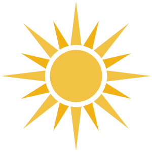

Главное · начните отсюда
Читать статью →
Кому подойдёт переезд в Уругвай
Этот путь подойдёт не всем, и это нормально. Разбираем две категории людей, для которых он особенно подходит.
Личный опыт, разбор документов и ответы на вопросы о ВНЖ, ПМЖ и жизни в Уругвае.

Этот путь подойдёт не всем, и это нормально. Разбираем две категории людей, для которых он особенно подходит.